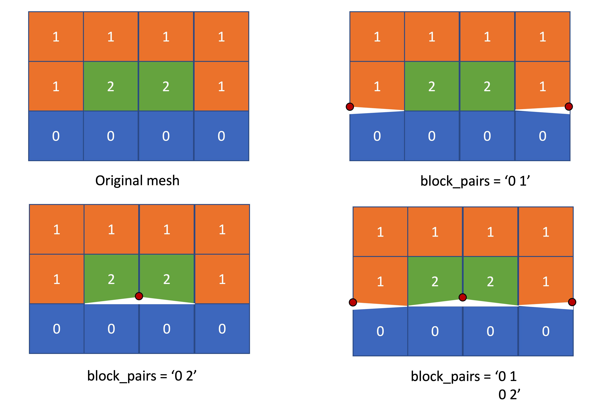

- inputThe mesh we want to modify
C++ Type:MeshGeneratorName
Controllable:No
Description:The mesh we want to modify
BreakMeshByBlockGenerator
Break the mesh at interfaces between blocks. New nodes will be generated so elements on each side of the break are no longer connected.
Description
This class implements a MeshGenerator to split a monolithic mesh by blocks similar to what is proposed by VP Nguyen Nguyen (2014).
To split the mesh, nodes shared by multiple blocks are duplicated N-1 times (where N is the number of blocks sharing a particular node). Each duplicated node is assigned to one block and all the elements sharing that node are updated. Separate directional sidesets are always created on both sides of each cut. Their names are formed from the adjacent block names, and each direction has its own boundary ID. These boundary pairs allow libMesh to reconstruct disjoint neighbors on distributed meshes.
Two block restriction options are provided: "surrounding_blocks" and "block_pairs". The "surrounding_blocks" option creates interfaces both between the listed blocks and between the listed blocks and the rest of the mesh. The "block_pairs" option creates interfaces only between the specified block pairs. Multiple block pairs are separated by semicolons (;). These two options cannot be used together. When neither is specified, interfaces are generated between all adjacent blocks.
Example Input File Syntax
Mesh Splitting
[Mesh<<<{"href": "../../syntax/Mesh/index.html"}>>>]
[./fmg]
type = FileMeshGenerator<<<{"description": "Read a mesh from a file.", "href": "FileMeshGenerator.html"}>>>
file<<<{"description": "The filename to read."}>>> = 4ElementJunction.e
[]
[./breakmesh]
type = BreakMeshByBlockGenerator<<<{"description": "Break the mesh at interfaces between blocks. New nodes will be generated so elements on each side of the break are no longer connected.", "href": "BreakMeshByBlockGenerator.html"}>>>
input<<<{"description": "The mesh we want to modify"}>>> = fmg
[]
[]Interface Naming
Each interface is named by joining the block names in the order of the side's block followed by its neighbor's block. For neighboring blocks named wood and steel, wood_steel contains sides on wood and steel_wood contains sides on steel. If a block is unnamed, its name defaults to Block plus its block ID; for example, wood_Block2 and Block2_wood.
Specify the desired directional block-pair names in the boundary parameter of interface kernels and cohesive zone models. For example, boundary = wood_steel selects the sides on wood facing steel. An interface kernel integrates its weak form on these selected sides, treating the elements in wood as the element side and those in steel as the neighbor side. Selecting steel_wood reverses these roles.
block_pairs option
The "block_pairs" option restricts splitting to the specified block pairs. Nodes shared by more than two blocks are left connected at junctions. In the example below, three different cases are shown, where one, two and three new nodes are created, respectively.

[Mesh<<<{"href": "../../syntax/Mesh/index.html"}>>>]
[msh]
type = CartesianMeshGenerator<<<{"description": "This CartesianMeshGenerator creates a non-uniform Cartesian mesh.", "href": "CartesianMeshGenerator.html"}>>>
dim<<<{"description": "The dimension of the mesh to be generated"}>>> = 2
dx<<<{"description": "Intervals in the X direction"}>>> = '1 1 1 1'
dy<<<{"description": "Intervals in the Y direction (required when dim>1 otherwise ignored)"}>>> = '1 1 1'
subdomain_id<<<{"description": "Block IDs (default to all zero)"}>>> = '0 0 0 0 1 2 2 1 1 1 1 1'
[]
[split]
input<<<{"description": "The mesh we want to modify"}>>> = msh
type = BreakMeshByBlockGenerator<<<{"description": "Break the mesh at interfaces between blocks. New nodes will be generated so elements on each side of the break are no longer connected.", "href": "BreakMeshByBlockGenerator.html"}>>>
[]
[]Input Parameters
- block_pairsThe list of subdomain pairs between which interfaces will be generated.
C++ Type:std::vector<std::vector<SubdomainName>>
Controllable:No
Description:The list of subdomain pairs between which interfaces will be generated.
- surrounding_blocksThe list of subdomain names surrounding which interfaces will be generated.
C++ Type:std::vector<SubdomainName>
Controllable:No
Description:The list of subdomain names surrounding which interfaces will be generated.
Optional Parameters
- enableTrueSet the enabled status of the MooseObject.
Default:True
C++ Type:bool
Controllable:No
Description:Set the enabled status of the MooseObject.
- save_with_nameKeep the mesh from this mesh generator in memory with the name specified
C++ Type:std::string
Controllable:No
Description:Keep the mesh from this mesh generator in memory with the name specified
Advanced Parameters
- nemesisFalseWhether or not to output the mesh file in the nemesisformat (only if output = true)
Default:False
C++ Type:bool
Controllable:No
Description:Whether or not to output the mesh file in the nemesisformat (only if output = true)
- outputFalseWhether or not to output the mesh file after generating the mesh
Default:False
C++ Type:bool
Controllable:No
Description:Whether or not to output the mesh file after generating the mesh
- show_infoFalseWhether or not to show mesh info after generating the mesh (bounding box, element types, sidesets, nodesets, subdomains, etc)
Default:False
C++ Type:bool
Controllable:No
Description:Whether or not to show mesh info after generating the mesh (bounding box, element types, sidesets, nodesets, subdomains, etc)
Debugging Parameters
References
- Vinh Phu Nguyen.
An open source program to generate zero-thickness cohesive interface elements.
Advances in Engineering Software, 74:27–39, 2014.
doi:10.1016/j.advengsoft.2014.04.002.[Export]